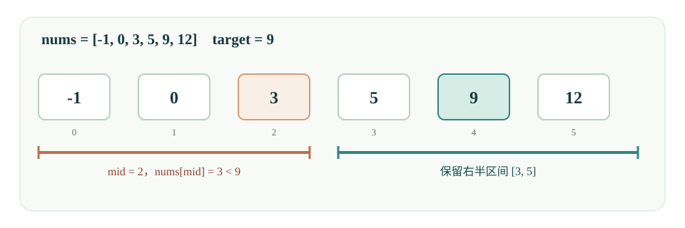
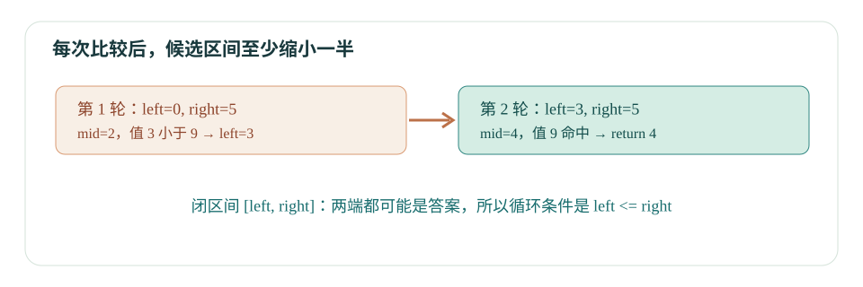

LeetCode 704 · 二分查找
先选定闭区间，再让每次比较都安全地排除一半。
简单 Easy13 分钟Binary Search01 · 为什么有序数组能跳过一半？
给定一个升序且元素互不相同的数组 nums 和目标 target，找到目标下标；如果不存在则返回 -1。题目要求 O(log n) 时间。
从左到右比较，最坏需要 O(n) 次。升序性质提供了额外信息：如果中点值比 target 小，那么中点左边的所有值也都更小，整段都可以排除。

02 · 先定义搜索区间：闭区间 [left, right]
本篇选择闭区间写法，含义是：如果目标存在，它只能位于 left 到 right（包含两端）之间。初始化 left=0、right=n−1。
- 若 nums[mid] 等于 target，直接返回 mid。
- 若 nums[mid] 小于 target，排除 mid 以及左边，更新 left=mid+1。
- 若 nums[mid] 大于 target，排除 mid 以及右边，更新 right=mid−1。
每轮开始时，如果 target 存在于数组中，它一定仍在闭区间 [left, right] 内。每次更新都只删除已被证明不可能包含 target 的位置。
03 · 逐步执行
对 nums = [-1,0,3,5,9,12] 查找 9。每次先计算中点，再根据比较结果缩小闭区间。

left=0、right=5，mid=2。中点值 3 小于 target=9，目标若存在只能在右侧。
left=0 · mid=2 · right=5
04 · 为什么不会漏掉目标？
初始区间覆盖整个数组，目标若存在，显然在其中。假设某轮目标仍在 [left,right]：当 nums[mid] 小于 target 时，升序性质保证 mid 及其左侧都小于 target，所以目标只能在 mid 右侧；更新 left=mid+1 保留所有可能位置。大于 target 时对称成立。相等时直接返回。
每轮至少排除 mid 一个位置，且区间长度至少减半，因此循环有限步终止。若 left > right，闭区间为空，结合不变量可知目标不存在，返回 -1 正确。
05 · Python 参考实现
class Solution:
def search(self, nums: list[int], target: int) -> int:
left, right = 0, len(nums) - 1
while left <= right:
mid = left + (right - left) // 2
if nums[mid] == target:
return mid
if nums[mid] < target:
left = mid + 1
else:
right = mid - 1
return -1
| 维度 | 结论 | 原因 |
|---|---|---|
| 时间 | O(log n) | 候选区间每轮至少减半。 |
| 额外空间 | O(1) | 只维护 left、right、mid。 |
| 输入修改 | 不修改 | 只读取数组。 |
06 · 最常见的错误：区间定义和循环条件不匹配
闭区间 [left,right] 可能只剩一个元素，即 left == right。此时它仍然是合法候选，因此循环条件必须是 left <= right。如果写成 left < right，最后一个位置会被跳过。

二分查找不是一段固定代码，而是一份区间契约：先说清区间包含什么，再决定循环条件与边界更新。